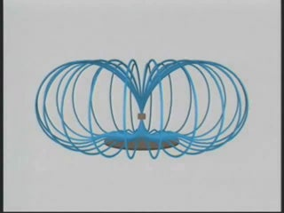
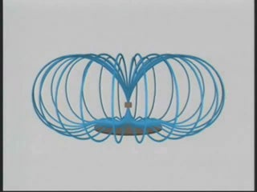

SUBJECT: Magnet Floating Above a Superconductor
DESCRIPTION: In this video, a small permanent magnet is suspended, in mid air, above a superconducting disc. The animation below shows how this effect is mediated by the magnetic fields between the two objects: The magnet sits in a potential "cushion" above the disc, as their fields repel one another. If the surface area of the disc is large compared to the magnet, the field will be stable enough for the magnet to float.